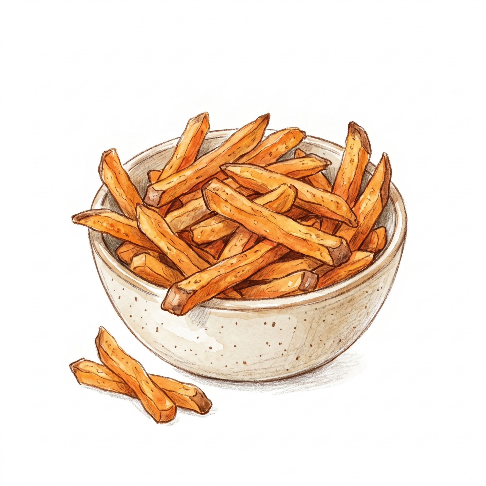
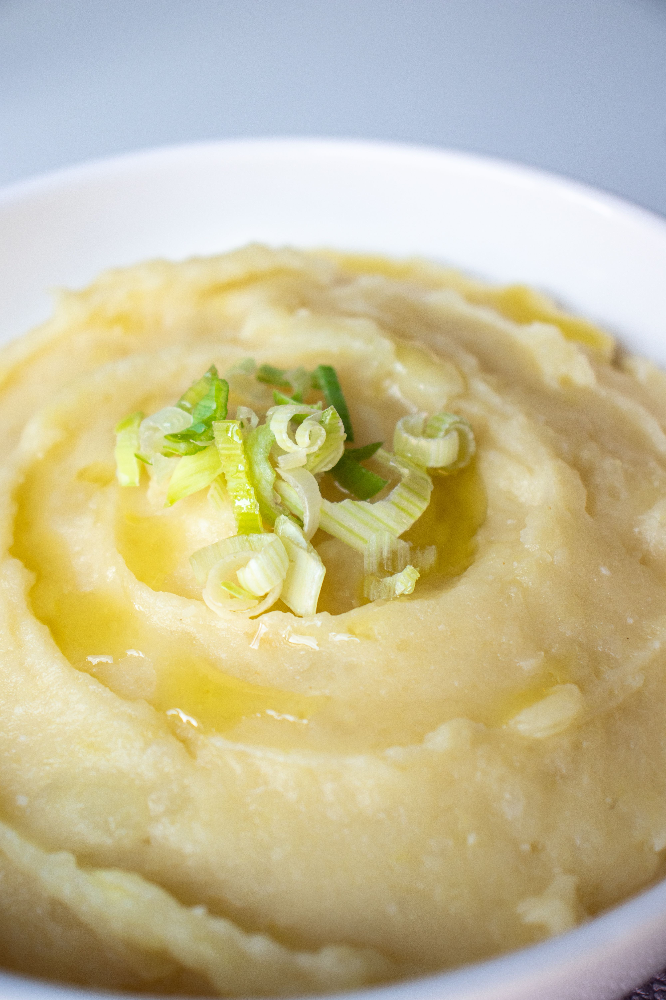
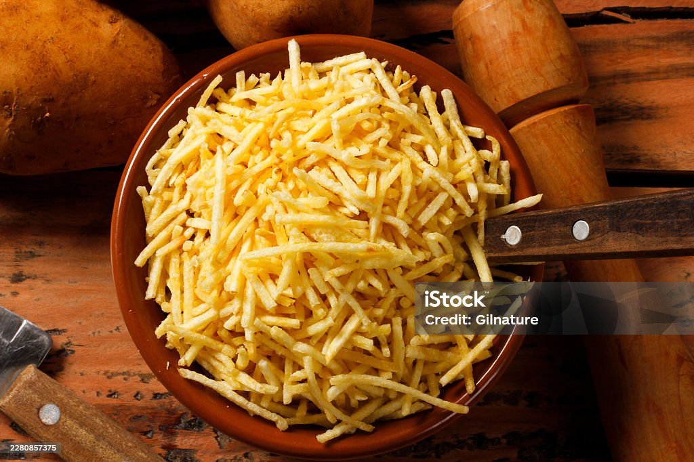
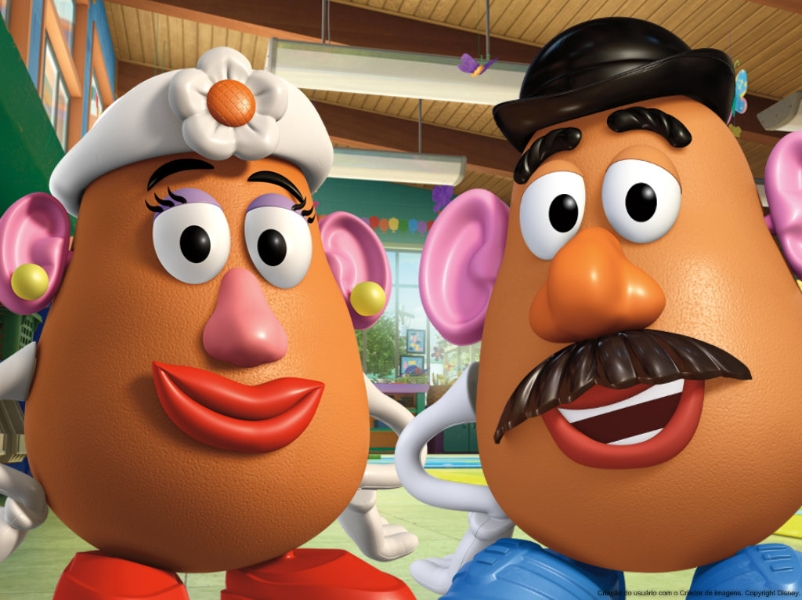

Principais tipos e variações de batatas
Colocarei em ordem, (Com base na minha opinião) os melhores tipos de batata.
Batata Frita

Pra mim a Goat das batatas, pois ela serve como acompanhamento, e se vira muito bom como prato principal, além de fazer parte do lendario combo de fast-food, sua variação com cheddar e bacon é sacanagem
Purê de Batata

Estamos falando de conforto custativo. O purê é um abraço de mãe em forma de alimento.
Batata Palha

Fenômenal!!!!!, porem oculpa a terceira posição pois é vista como apenas acompanhante, (Mas é uma senhora acompanhante!!!!!!!)
-
Senhor e Senhora Batata

Muito importânte para a damartugia Batatunestica, pois traz resentatividade nas telinhas para batatas do mundo todo. Mas em questão de protagonismo, temos batatas mais importantes